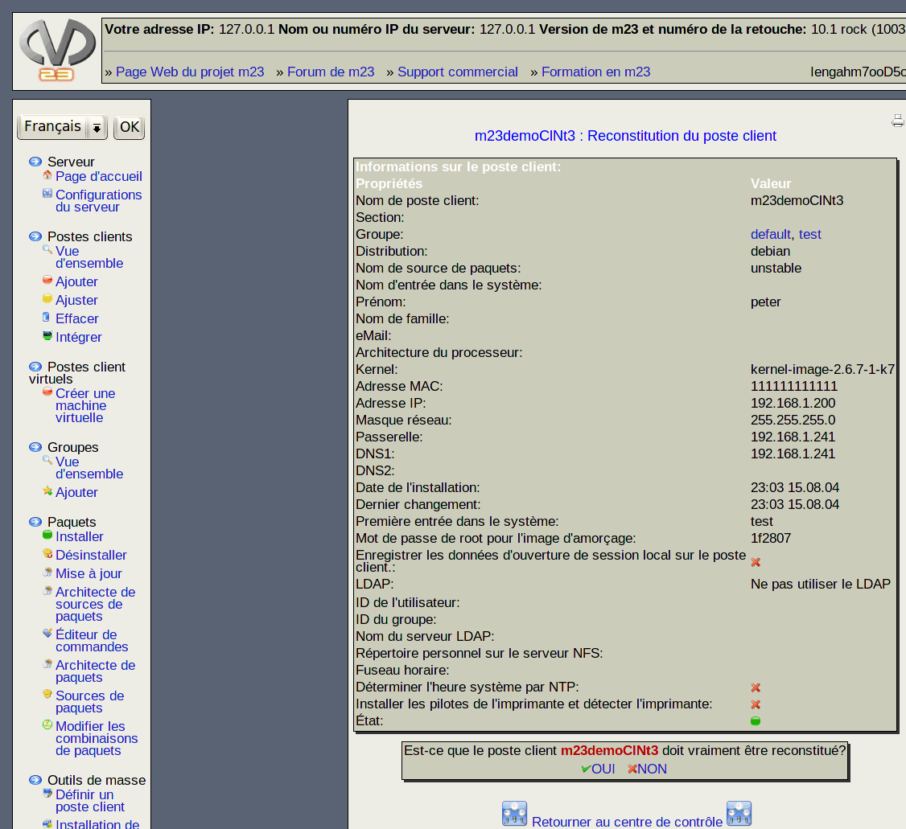

Quand vous régénérez un poste client, il sera installé comme à l'origine et de nouveau partitionné, puis formaté. Tous les paquets logiciels installés à l'origine par m23 seront reinstallé. Les changements fait manuellement au poste client ne peuvent pas être restitué.

Sous-sections
root
2017-06-22